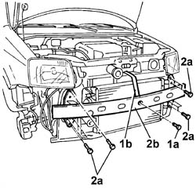

7210A18 FRONT CROSSMEMBER
- Path
- Procedures > 72 PANELS AND FRAME > 7210 REMOVING REFITTING > 7210A STRUCTURAL ELEMENTS (FRONT PART) > 7210A18 FRONT CROSSMEMBER
- Kind
- repair procedure (removal / refitting; the operation number is the code)
- Applies to
- all engines; all production periods
- Interactive page
- https://sloeber94.github.io/elrnDB-fPnd/en/#/169001940
Applies to: all engines; all production periods
 Removing
Removing
 Refitting
RefittingPosition the vehicle on a lift.
Disconnect the negative battery terminal.
Op. 1048A21 FILTER INPUT SLEEVE - R R
Op. 7055B90 LEFT FRONT WHEEL ARCH LINER - R.R.
Op. 7055B91 RIGHT FRONT WHEEL ARCH LINER - R.R.
Op. 7055A42 FRONT GRILLE - R+R
1. Undo the fixing nut (1a) and release the centre reinforcement bracket (1b) from the crossmember.
2. Undo the bolts (2a) fixing the crossmember to the bodyshell struts, then remove the front crossmember (2b).

Applies to: all engines; all production periods
Refitting
RemovingPosition the front crossmember on the bodyshell struts and tighten the fixing bolts to the recommended torque.
Value - daNm | Fastening | Component | Ø | |
|---|---|---|---|---|
- | 4 | Bolt | Upper | M8 |
Value - daNm | Fastening | Component | Ø | |
|---|---|---|---|---|
- | 4 | Bolt | Lower | M10 |
Tighten the nut fixing the centre reinforcement bracket to the crossmember.
Op. 7055A42 FRONT GRILLE - R+R
Op. 7055B91 RIGHT FRONT WHEEL ARCH LINER - R.R.